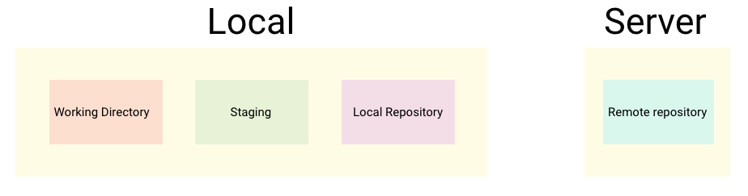
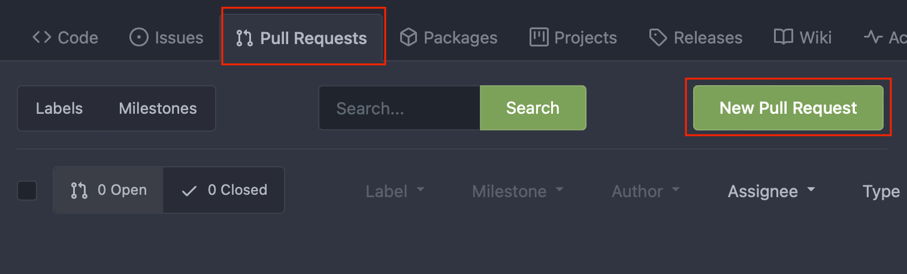
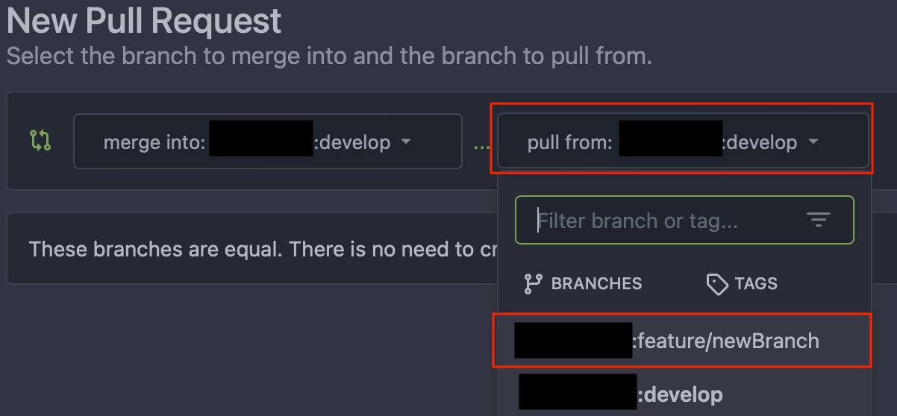
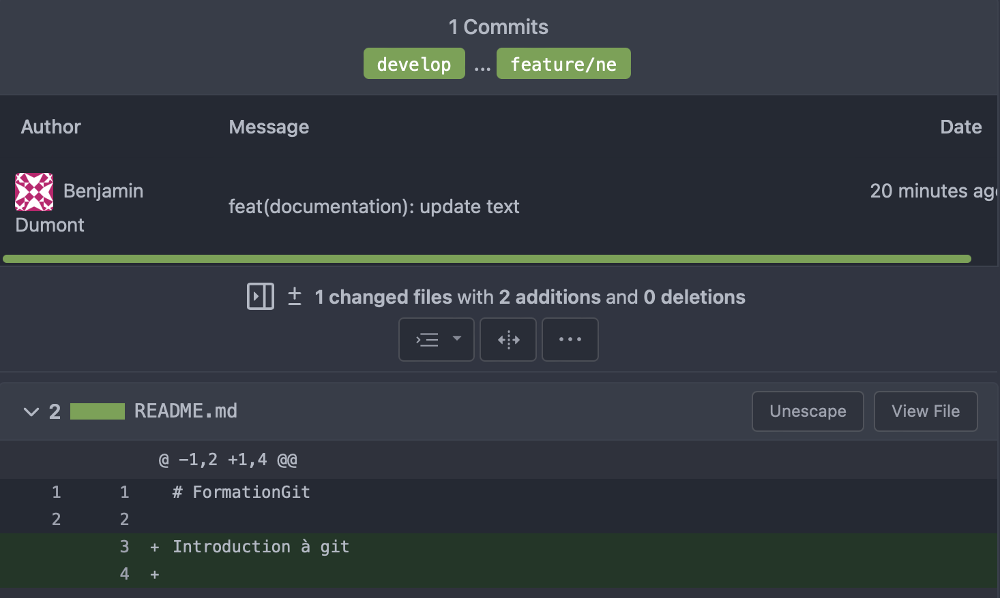
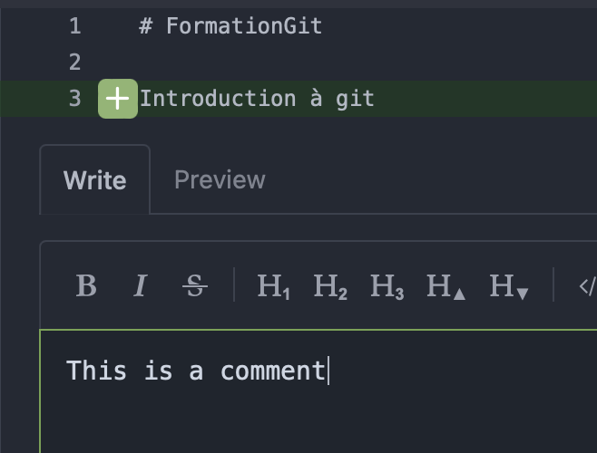
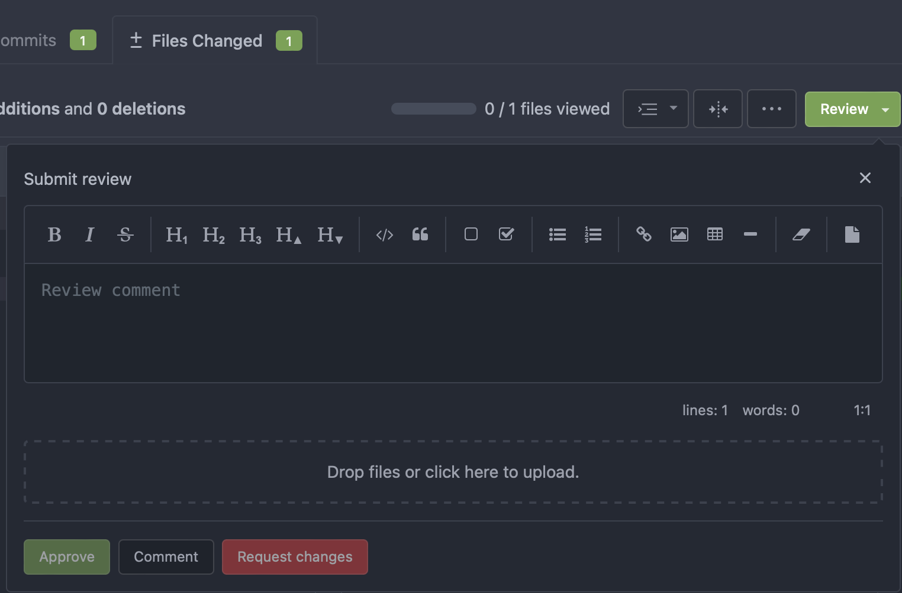
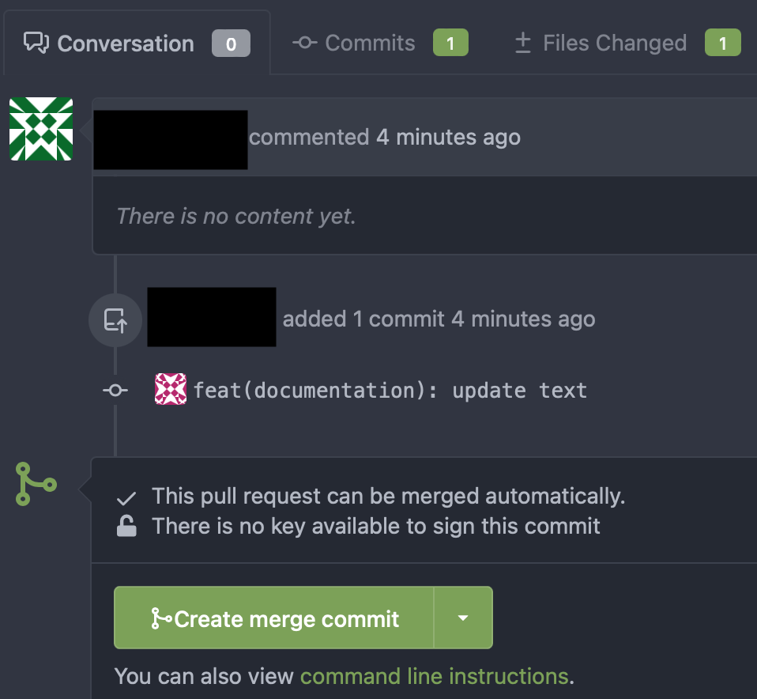

Git tutorial
Tools: Terminal
Press 'Space' to continue
Press 'n' to show/hide notes
Press 's' for speaker mode
Introduction
- Distributed SCM
- Most popular
- Designed for merging branches
Schema
Glossary (for local work)
- Working directory: local directory where you work
- Index: temporary zone enumerating all changes to save
- Commit: change save
- HEAD: last commit
Basic commands
Init workspace from remote repository
git clone https://repository_url # https
...
git clone user@repository_url # ssh
Adding files to staging
git add path/to/file1 path/to/file2
...
git add .
Committing to local repository
git commit
...
git commit -m "my commit message"
Identifying a commit
Identified by a sha1 (e.g.: 3241a3db7c76e29b63c0b1ea116b6db0f8619fdc)
Exercise
- Clone repository (you should be on develop branch)
- Create a file with your username as filename
- Commit it
- Write the datetime in the file
- Commit it
Sending data to the remote repository
git push origin your_branch_name
Getting data from the remote repository
git pull origin your_branch_name
Exercise
Push the file previously created on the develop branch
Managing branches
Creating branch locally
git switch -c new_branch
Switching branch
git checkout branch2 # deprecated
...
git switch branch2
Merging branches
git merge branch2 # will merge branch2 into the current branch
Merging flowchart
Show current branch history
git log
...
git log --decorate --oneline --graph
Updating local repository information from remote
git fetch
Conflicts
<<<<<<< HEAD:index.html
contact : email.support@github.com
======
please contact us at support@github.com
>>>>>>> iss53:index.html
You have to solve it manually, then commit the change
Git flow
Common branches
- master/main: production
- develop: most up to date branch
- release: pre-production branch, waiting for tester approval
Personal branches
- All other branches
- Temporary
- Should be deleted when merged
Flowchart
Tag
- Identifies a commit by a version (X.Y.Z)
- MUST be on a reference branch
- Should be on main/master
Tag flowchart
git tag -a 1.0.0 -m "my comment"
Undo (local)
Undo all changes
git reset --hard HEAD
Remove from index
git reset
...
git reset --mixed
Restore file from HEAD
git checkout myfile.txt # deprecated
...
git restore myfile.txt
Rewrite history
We will see it the next section
Save changes into a temporary stack and remove them
git stash # Save changes into a temporary stack and remove them
git stash pop # restore changes from stash
Rewrite history
Warning
Rewriting history must be done only on personal branches
Add files from index into the last commit
git commit --amend
Shift history / Context
- I need to work on a new feature
- I create a branch "feature" from develop
- Someone merged some code into develop
- I need the new code on develop for my feature
Shift history / Actions
- Merge action: will create a merged commit into my feature branch
- Rebase action: will put all the new commits from develop before commits on personal branch
Rebase Flowchart
Shift history / Rebase
git rebase develop
Shift history / Rebase with conflicts
Solve conflicts, then :
git add my-file-with-conflicts-resolved.txt
git rebase --continue
Merge vs Rebase 1/2
Merge is easier to use to deal with conflicts, since we treal all of them inside the same commit, contraty to rebase. Rebase will apply each commit, so you may need to solve conflicts for each commit.
Merge vs Rebase 2/2
Merge will create a merged commit. It makes some sense when you want to put your code into develop. It makes no sense when you want to update your personal branch from develop
Merge vs Rebase Summary
- Merge: destination branch is a common branch
- Rebase: destination branch is a personal branch
Interactiv Rebase 1/4
On your personal branch, you may want to:
- Change a commit message
- Remove a commit
- Merge some commits into only one commit
- Reorder commits
Interactiv Rebase 2/4
Identify the start commit from which you want to rewrite history
git log
# Identify the sha1 (excluded)
Interactiv Rebase 3/4
git rebase -i my_sha1
Interactiv Rebase 4/4
pick b6c57be commit message 1
pick 53c836a commit message 2
pick e2130ac commit message 3
# Rebase 4d32053..e2130ac onto 4d32053 (3 commands)
#
# Commands:
# p, pick = use commit
# r, reword = use commit, but edit the commit message
# e, edit = use commit, but stop for amending
# s, squash = use commit, but meld into previous commit
# f, fixup = like "squash" but keep only the previous
# commit's log message, unless -C is used, in which case
# keep only this commit's message; -c is same as -C but
# opens the editor
Push a rewritten history
# If remote doen't have F and G
git push origin personal_branch
# Else, push force
git push -f origin personal_branch
Exercise
- On your personnal branch, create 3 commits (change the data in the file)
- Push it
- Change the commit message of your 1rst commit, merge the 2nd and 3rd commits
- Push
Pull requests
Aim
- Show your code to other developers
- Request for reviews
- Request for changes
- Merge your personal branch to a reference one
Aim (advanced)
- Run tests
- Detect code coverage
- Generate documentation
- Define breaker rules for merging
- ...
Create a pull request
Select the branches (from, to)
PR informations
Comment
Review
Merge
Exercise
- Update your working directory with the lastest develop
- Create a personal branch
- Wait
- Modify file.txt and put your name and datetime instead of its content
- Create a pull request
- Wait for approval
- Merge
Best practice
Commit message
Normalize your message commit (use a reference or create a new one for all developers)
Avoid merge
Avoid manual merge. Use Pull Request for merging.
Forbid Push on Reference Branch
You must not be able to push directly into develop/main/master/release branch. Use a Pull request instead.
Avoid ByPassing a Pull Request
Use pull request to show your code and wait for reviewers or comments before merging.
Personal branches
Only work on your personal branches. Your personal branches must not be based on otherone personal branch.
Parallel reference branches
Avoid parallel reference branches. You should only have at a time:
- develop
- main/master
- ONLY ONE release
Rewritting history
When you rewrite the history, force push as soon as possible to avoid an error telling you to pull the repository (which will lead to unexpected commits)
Other stuff
Ignore some files
You can ignore some files by using a .gitignore file in root folder or sub folders
## Example
*.ipa
*.dSYM.zip
*.dSYM
You can generate .gitignore file using gitignore.io
Graphical clients
- SourceTree
- GitKraken
Graphical client (terminal)
oh-my-zsh (can be installed with homebrew)
Github: benjdum59
Website: benjdum59.github.io
Mail: benjamin.dumont.pro@gmail.com
Go to Homepage